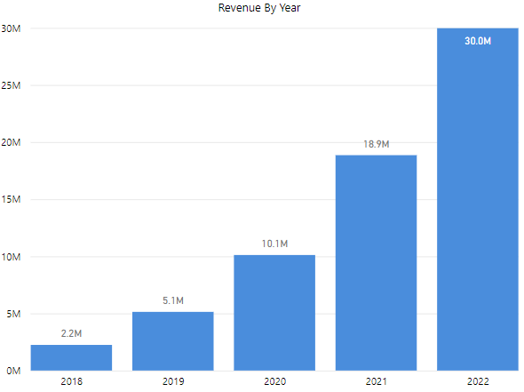
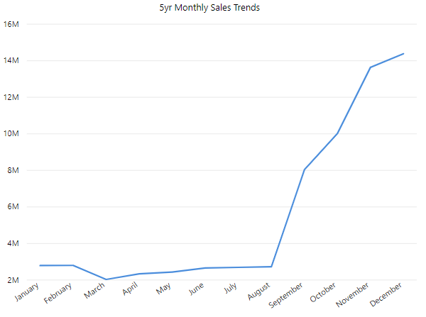
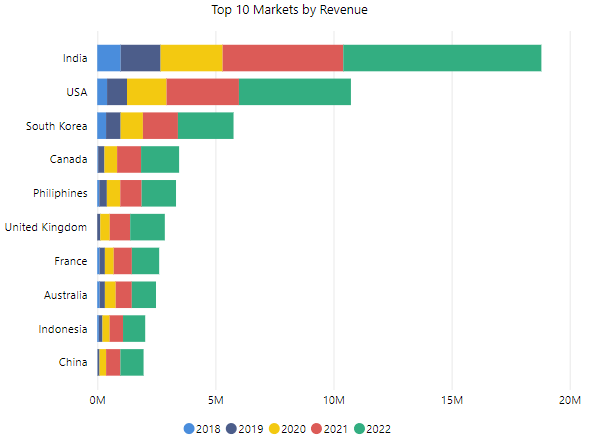
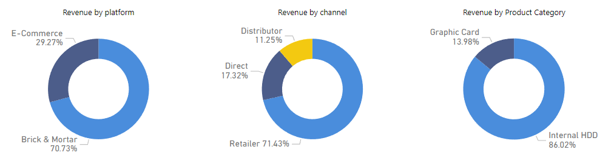

From Numbers to Narratives: A Deep Dive into AtliQ Hardware's Sales
Atliq Hardware is a renowned name in the tech industry, specializing in top-tier computer hardware components crafted for gaming and high-performance needs. Famed for their unwavering reliability, blazing speed, and exceptional durability, Atliq hardware is the preferred choice for discerning gamers and tech enthusiasts worldwide.
Why this project?
In the quest to expand my data analytics skills, I embarked on this exhilarating adventure, driven by the desire to not only apply what I've learned but also to dive headfirst into the realm of sales analytics. Armed with questions and armed with data, I delved deep into the numbers, seeking insights that would not only benefit the hardware store but also sharpen my analytical prowess.
Area of Focus
In this project, I will meticulously dissect and analyze a five-year span of sales data, spanning from 2018 to 2022. My investigation will be guided by four key pillars:
- Annual Growth Analysis📊: I'll calculate and interpret the annual percent change in sales over this period, offering a comprehensive view of the hardware store's performance and evolution.
- Monthly Sales Trends📈: Delving deeper, I'll explore the nuances of sales trends on a monthly basis within each year. This will unveil the ebb and flow of demand throughout the year.
- Market Dominance🌎: I'll identify the top 10 markets that consistently contribute to revenue in any given year. Understanding market dynamics is crucial for strategic decision-making.
- Revenue Breakdown💰: Lastly, I will conduct an in-depth analysis of the percentage breakdown of revenue, dissecting it by different platforms, product categories, and sales channels. This will shed light on the store's diverse revenue streams.
About Data and it's source
The data for this project was sourced from Kaggle (link), a renowned platform for datasets and data science resources. Data contains six distinct tables which inlcudes important attributes like:
- Quantity Sold
- Gross Price
- Manufacturing Cost
- Discount Percentage
- Product Category
- Product Variant
- Distribution Channel
- Market
- Region
Exploration
Upon retrieval, I loaded the data into MySQL. This SQL-based approach allowed for structured data manipulation and querying, facilitating the extraction of valuable insights. Upon merging these tables, the resulting dataset comprises a total of 67,250 rows and 19 columns, serving as the foundation for our in-depth analysis. Finally, visualizations are produced using Power BI
Analysis
Annual Growth Analysis: A dive into Sales Evolution
To calculate annual percent change in sales, I first meticulously computed daily sales figures by multiplying quantities sold with the discounted gross price. This detailed approach allowed me to capture the nuances of daily transactions. Then with a year-by-year aggregation, the annual sales growth percentages came into focus:
- In 2018, the store recorded total sales of 2.2 million, laying the foundation for what was to come.
- The year 2019 saw a remarkable surge, with total sales amounting to 5.1 million, marking an astonishing 129% growth.
- Amidst the challenges of 2020, the store's resilience shone through, with sales reaching 10.1 million, reflecting a substantial 97% increase in revenue.
- In 2021, the upward trajectory continued, as sales skyrocketed to 18.9 million, a remarkable 86% leap from the previous year.
- Finally, in 2022, the store achieved a new milestone, raking in nearly 30 million in sales, representing a solid 59% growth compared to the preceding year.
Here is a visual representation of the above in a simple column chart.
Moving on to Monthly Sales Trends:
To decode the intricate dance of monthly sales trends, I leveraged the revenue column derived from our meticulous calculations. My approach involved aggregating this revenue data on a monthly basis, allowing me to unearth fascinating patterns that repeated year after year.
What emerged was a recurring narrative: The beginning of each year presented a portrait of stability, with sales staying consistently strong. However, it was the latter part of the year, from September onward, that witnessed an electrifying transformation. Sales embarked on an exponential journey, surging with unwavering momentum right through to the year's end.
This captivating trend unfolded in each annual analysis, painting a clear picture of seasonal shifts and opportunities. By pinpointing this recurring pattern, we gain invaluable insight into the store's sales dynamics, empowering us to harness this momentum strategically.
Here is a visual representation of aggregated monthly sales trend for 5 years in a simple line chart. You can see the monthly sales trend each year in the final dashboard at the end of this report.
Let's look at Market Dominanc: Deciphering the Top Revenue Contributors
In the quest to comprehend the heartbeat of sales dynamics, I set out to identify the steadfast market leaders that consistently paved the way for revenue growth. Armed with SQL's analytical prowess, I crafted a groupby query wherein I leveraged the 'Market' column in conjunction with revenue data to unveil the top 10 markets that, year after year, proved to be the linchpin of store's success. The results were loaded into Power BI to visually reveal a powerful roster of contributors:
Finally Demystifying Revenue Streams:
In the pursuit of unraveling the intricate web of revenue sources, I turned to the power of data visualization in Power BI. Donut charts took center stage, offering a visual feast for the eyes as I delved into the percentage breakdown of revenue by platform, channel and product category. The revelations were illuminating:
- A staggering 71% of the revenue flows in from Brick & Mortar stores, highlighting their pivotal role in store's earnings, while the remainder is attributed to online sales.
- Drilling deeper into product categories, a striking 86% of the sales emanate from Internal HDD, with the remainder being contributed by Graphic Cards.
- he revenue breakdown by channel paints a compelling picture, with retailer sales commanding a lion's share at 71% of the total revenue. Direct channels follow at 17%, and distributors play their part, contributing 12%.
Here is a visual representation using donut charts.
This comprehensive analysis of the diverse revenue streams equips us with insights to refine the strategies, emphasizing the pivotal role of certain product categories and sales channels while paving the way for data-driven decision-making.
Summary of Key Insights and Strategic Implications:
Throughout this immersive project, we journeyed through the labyrinth of sales data, uncovering invaluable insights that can guide us toward data-driven decisions and propel AtliQ Hardware to new heights of growth:
- Annual Growth Trends: Year after year, the store experienced substantial growth in sales, with a remarkable 129% spike in 2019. Understanding these annual fluctuations allows us to anticipate trends, allocate resources effectively, and set realistic targets.
- Monthly Sales Patterns: A consistent pattern emerged, where the early months showcased steady sales, and an exponential surge began in September, leading to year-end highs. Recognizing this seasonality enables us to optimize inventory, marketing, and staffing.
- Market Dominance: Ten markets consistently emerged as our revenue champions, including India, USA, and South Korea. Identifying these key markets empowers us to tailor marketing strategies and allocation of resources to drive growth.
- Revenue Breakdown: With 71% of revenue from Brick & Mortar stores, the importance of physical retail is evident. Further, product categories like Internal HDD and Graphic Cards contribute significantly. Leveraging this insight, we can focus on strengthening these areas.
- Sales Channels: Retailer sales account for a substantial 71%, followed by Direct and Distributor channels. Diversifying sales channels or optimizing them based on this breakdown can lead to increased revenue streams.
By embracing these insights, we embark on a data-driven journey that informs strategic decisions, enhances resource allocation, and tailors marketing efforts. Our newfound understanding of growth patterns, market dynamics, and revenue streams equips us to seize opportunities, mitigate challenges, and propel our AtliQ Hardware toward even greater success.
Experience the Insights: Explore the Interactive Dashboard
Delve deeper into the story of our sales data and explore the dynamic visuals that bring it to life. Click below to interact with our interactive dashboard, where you can navigate through the trends, markets, and revenue breakdowns that shape our strategic decisions. Witness the power of data-driven insights in action, and envision the path to our future growth.